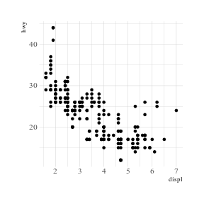
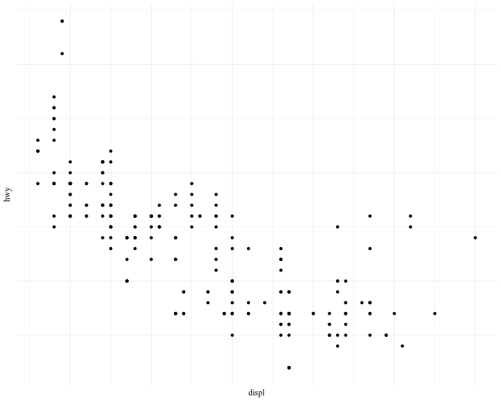
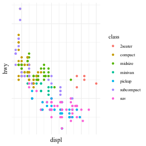
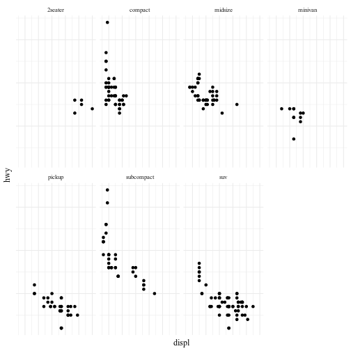
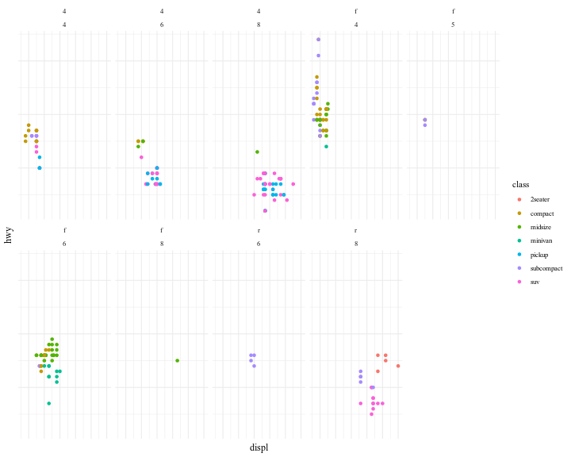
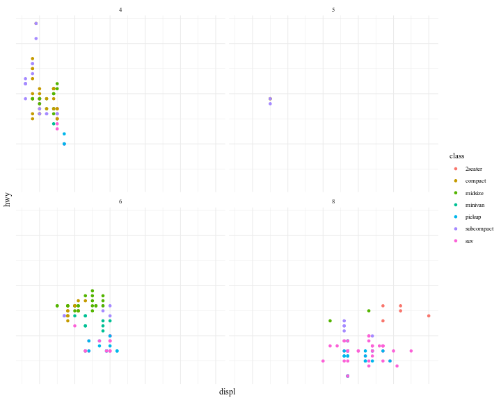
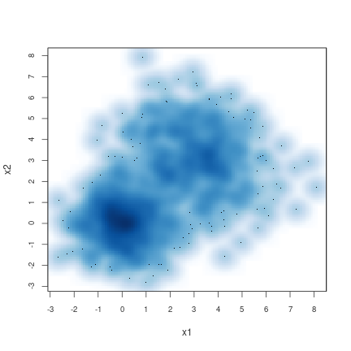
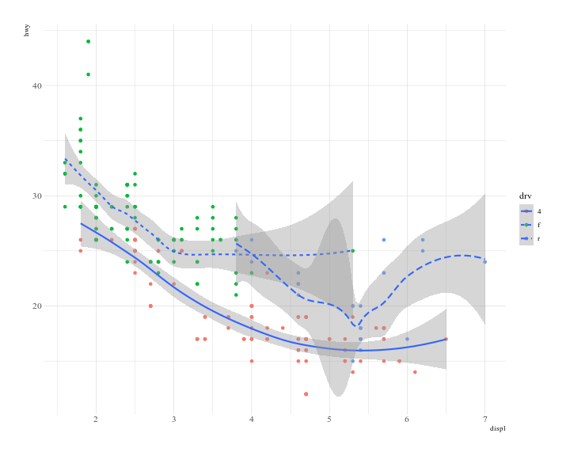

一个说明
ggplot2::ggplot()指使用ggplot2包中的ggplot函数，::表示快速调用某个包里的函数。
示例
使用ggplot2包中的mpg数据框，这份数据是一份汽车资料：
1 | knitr::kable(head(ggplot2::mpg, 10)) |
| manufacturer | model | displ | year | cyl | trans | drv | cty | hwy | fl | class |
|---|---|---|---|---|---|---|---|---|---|---|
| audi | a4 | 1.8 | 1999 | 4 | auto(l5) | f | 18 | 29 | p | compact |
| audi | a4 | 1.8 | 1999 | 4 | manual(m5) | f | 21 | 29 | p | compact |
| audi | a4 | 2.0 | 2008 | 4 | manual(m6) | f | 20 | 31 | p | compact |
| audi | a4 | 2.0 | 2008 | 4 | auto(av) | f | 21 | 30 | p | compact |
| audi | a4 | 2.8 | 1999 | 6 | auto(l5) | f | 16 | 26 | p | compact |
| audi | a4 | 2.8 | 1999 | 6 | manual(m5) | f | 18 | 26 | p | compact |
| audi | a4 | 3.1 | 2008 | 6 | auto(av) | f | 18 | 27 | p | compact |
| audi | a4 quattro | 1.8 | 1999 | 4 | manual(m5) | 4 | 18 | 26 | p | compact |
| audi | a4 quattro | 1.8 | 1999 | 4 | auto(l5) | 4 | 16 | 25 | p | compact |
| audi | a4 quattro | 2.0 | 2008 | 4 | manual(m6) | 4 | 20 | 28 | p | compact |
创建ggplot2图形,散点图：
1 | ggplot(data = mpg) + |

其中mapping是映射的意思，在ggplot()的()中出现的内容将传递之后的绘图函数，p保存了绘制好的图形，可以进一步进行美化和调整：
1 | p + theme_minimal(base_family = enfont) + |

可以将一些图片调整的代码存放在modify命名的一个对象中：
1 | theme_minimal(base_family = enfont) + |
实际上，ggplot2的魅力之一在于通过颜色(color)、形状(shape)、透明度(alpha)等等属性展示超越2维的信息，比如：
1 | ggplot(data = mpg) + |

另外一种展示超越2维属性的方法就是分面：
1 | ggplot(data = mpg) + |

facet_wrap()中的第一个参数是R中的一种数据结构，叫作“公式”，并非数学意义上的意思。也可以使用2个变量进行分面：
1 | ggplot(data = mpg) + |

可以使用占位符.来代替facet_wrap()第一个参数中的drv，效果如下：
1 | ggplot(data = mpg) + |

几何对象
R并非只有ggplot2一种绘图方案，比如：
1 | set.seed(123) |
1 | ## [,1] [,2] |
1 | smoothScatter(x, xlab = "x1", ylab = "x2") |

而ggplot2肯定并非只有一种几何对象，比如geom_smooth、geom_line、geom_bar等等，而这些对象生成的图层可以覆盖，比如：
1 | ggplot(data = mpg) + |
1 | ## `geom_smooth()` using method = 'loess' and formula 'y ~ x' |

未完待续